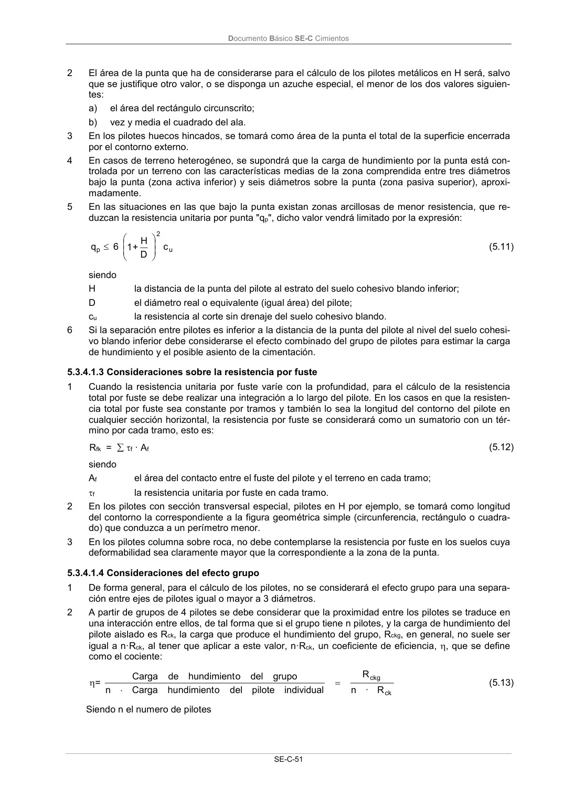

DB-SE-C Cimientos · edición 2019-12-20 · capa oficial
Documento DB-SE-C-oficial · SHA-256 del PDF a71133f4b0dca253e45ea3071c70f2a512354bcc5cd841bf89b1a502f567ac5e
Copia fiel del PDF fuente · Fuente oficial
Ficha de la disposición en la fuente oficial
Formatos: JSON del segmento · Markdown
5.3.4.1.4 Consideraciones del efecto grupo 1 De forma general, para el cálculo de los pilotes, no se considerará el efecto grupo para una separa- ción entre ejes de pilotes igual o mayor a 3 diámetros. 2 A partir de grupos de 4 pilotes se debe considerar que la proximidad entre los pilotes se traduce en una interacción entre ellos, de tal forma que si el grupo tiene n pilotes, y la carga de hundimiento del pilote aislado es Rck, la carga que produce el hundimiento del grupo, Rckg, en general, no suele ser igual a n·Rck, al tener que aplicar a este valor, n·Rck, un coeficiente de eficiencia, , que se define como el cociente: = ck ckg R · n R individual pilote del o hundimient Carga n grupo del o hundimient de Carga (5.13) Siendo n el numero de pilotes Documento Básico SE-C Cimientos SE-C-52 3 El coeficiente de eficiencia será de 1, para separaciones entre ejes iguales o superiores a 3 D. Para separaciones de 1 D el coeficiente de eficiencia será 0,7. Para separaciones entre 1 D y 3 D se in- terpolará linealmente entre 0,7 y 1. 4 En pilotes hincados en arenas densas o muy densas se podrá adoptar un coeficiente de eficiencia igual a 1. Podrá aumentarse este valor, previa justificación, por la posible compactación que se pueda producir, sin que en ningún caso pueda ser superior a 1,3. 5 Para determinar el valor de cálculo de la resistencia al hundimiento del grupo, analizado como una única cimentación que engloba los pilotes, debe utilizarse un coeficiente, R, que como mínimo será el indicado en la tabla 2.1.
